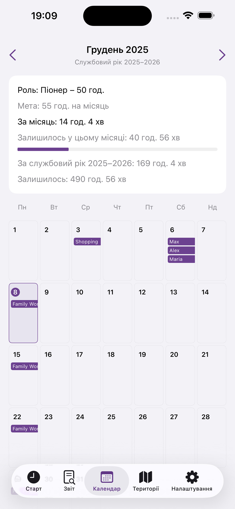
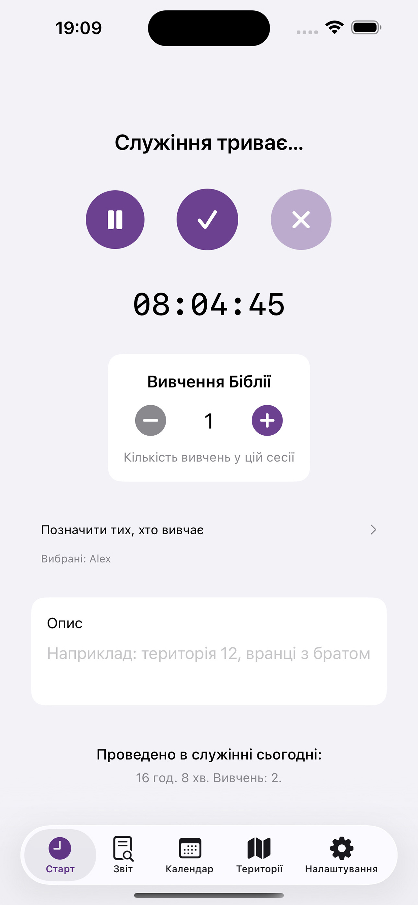
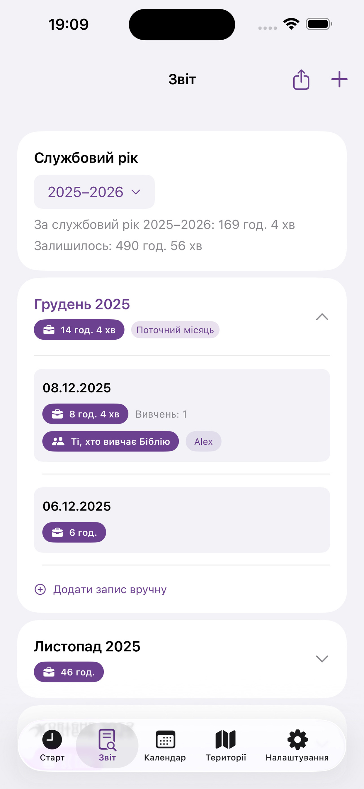
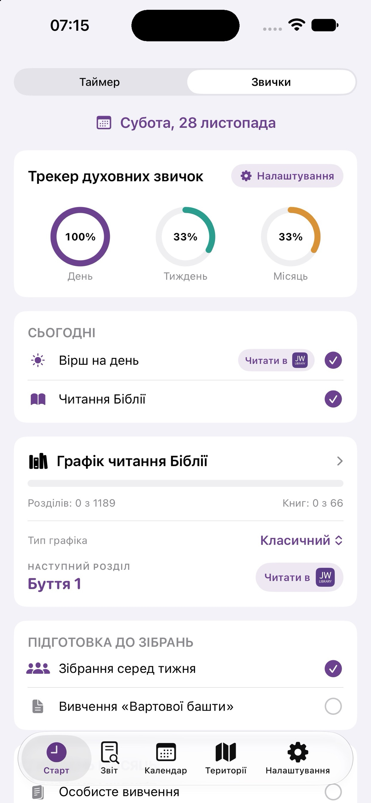
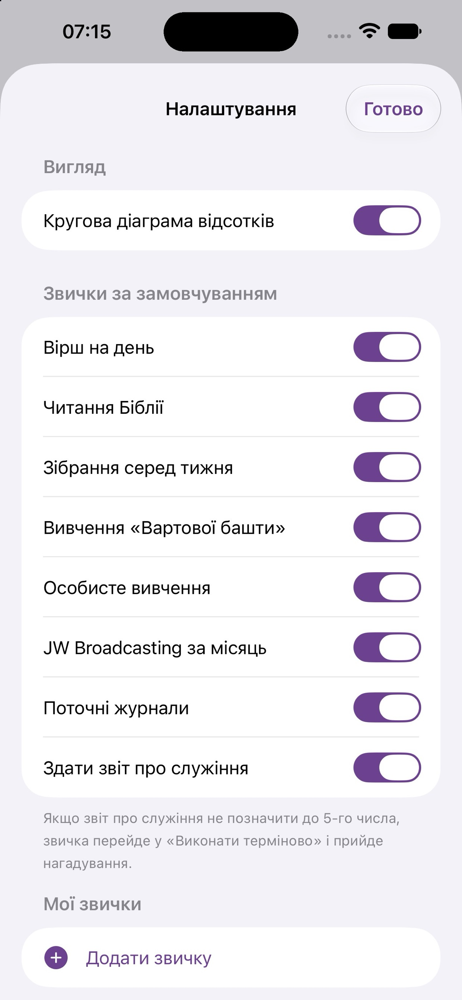
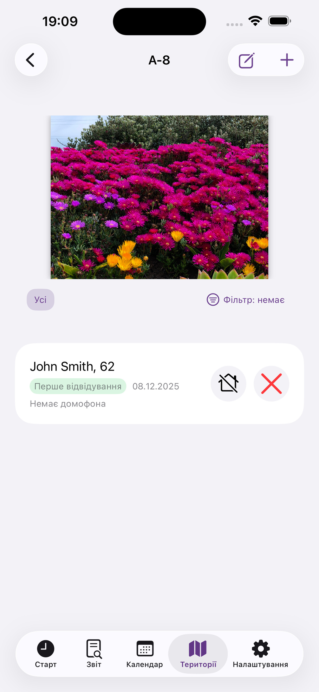
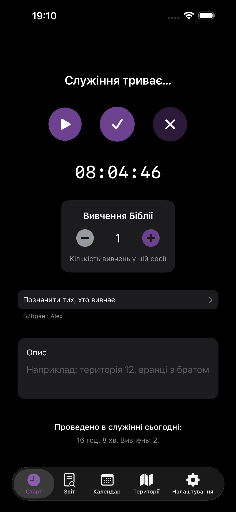
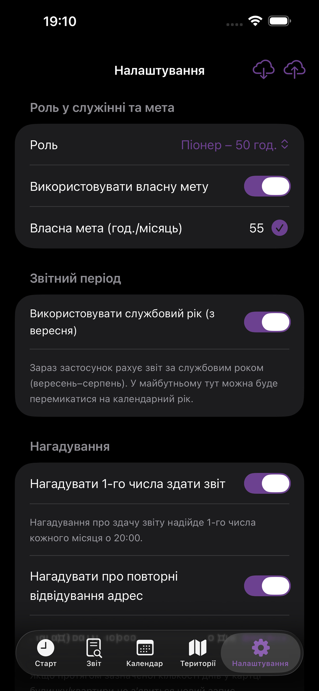

Служіння, звіт, години піонера, території та читання Біблії
Безкоштовний і приватний додаток Свідків Єгови для iPhone та iPad: таймер із віджетами, щомісячний звіт, календар піонера, особисті дільниці, повторні відвідини, біблійні вивчення, духовні звички та графік читання Біблії.




Усі екрани додатка JW Ministry
Реальні скріншоти інтерфейсу українською мовою — від живого таймера і списку зацікавлених до календаря піонера, дільниць і темної теми OLED.









Усі інструменти для організованого служіння
Створено спеціально під реальні завдання вісників, допоміжних, загальних і спеціальних піонерів.
Таймер, віджети та Dynamic Island
Запускайте відлік часу з додатка, віджета на головному екрані або з екрана блокування. Активний таймер завжди перед очима в Dynamic Island.
Облік біблійних вивчень та уроків
Прив'язуйте проведені вивчення до записів звіту. У картці кожного зацікавленого зберігається посібник, поточний урок і пункт.
Усі призначення та особиста ціль у годинах
Підтримка ролей: Вісник, Допоміжний піонер (15 або 30 год), Загальний піонер (50 год), Спеціальний піонер (90 / 100 год) та власна місячна ціль.
Службовий рік (вересень–серпень) і Календар
Плануйте зустрічі для проповідування та сімейне поклоніння. Порівнюйте запланований і фактичний час та переводьте плани у звіт одним свайпом.
Дільниці, багатоквартирні будинки та нагадування
Створюйте картки дільниць, генеруйте квартири за під'їздами та поверхами, додавайте фото, шукайте за адресою чи ім'ям та отримуйте нагадування про повторні відвідини.
100% приватність і надійні резервні копії
Без реєстрації, акаунтів і зовнішніх серверів. Усі дані та фото дільниць зберігаються виключно на вашому пристрої з експортом в iCloud Drive.
Що нового у версії 2.0.1
- Новий розділ «Духовні звички» на вкладці «Старт»: кільця прогресу (День / Тиждень / Місяць), власні звички, налаштування «У шлюбі» для Сімейного поклоніння та термінове нагадування 5-го числа.
- Графік читання Біблії: 5 маршрутів читання, облік розділів по всіх 66 книгах, прогноз дати завершення та кнопка «Читати в JW Library».
- Подвійна ціль у Календарі та віджетах: одночасне відображення норми призначення (30 або 50 год) і додаткової особистої цілі у подвійному кільці.
- Повна адаптація інтерфейсу під складаний екран iPhone Duo та iPadOS.
- У Налаштуваннях додано кнопки «Поділитися додатком» і переходу на сайт.
Чому вісники та піонери обирають JW Ministry
Наочне порівняння можливостей під час планування служіння, ведення дільниць і складання звіту.
| Можливість | Паперові записи | Старі додатки | JW Ministry 2.0.1 |
|---|---|---|---|
| Живий таймер на заблокованому екрані та в Dynamic Island | Ні | Ні | Так (Live Activities) |
| Автопідрахунок норми піонера (15, 30, 50, 100 год) і службового року (600 год) | Вручну | Частково | Автоматично + власна ціль |
| Порівняння «План / Факт» у Календарі та переведення плану у звіт свайпом | Ні | Ні | В один дотик |
| Генератор квартир за під'їздами та поверхами + фото і 10 кольорів дільниці | Паперові картки | Лише текст | Повна картотека + пошук |
| Нагадування про повторні відвідини та здачу звіту 1-го числа | Ні | Рідко | Гнучкі сповіщення iOS |
| Приватність даних і резервні копії з фотографіями в iCloud Drive | Легко загубити | Збої при зміні iPhone | 100% офлайн + надійний бекап |
| Адаптація під нові iOS, iPad та нічну тему OLED | — | Не оновлюються | Нативний SwiftUI (35+ мов) |
Помічник у проповідуванні Свідків Єгови
Розроблено спеціально для вісників, допоміжних, загальних і спеціальних піонерів — чудове доповнення до JW Library на вашому iPhone та iPad.
Для загальних і спеціальних піонерів (50, 90 і 100 годин)
Якщо ви служите загальним піонером (норма 50 годин на місяць і 600 годин за службовий рік з вересня по серпень), додаток автоматично рахує виконані години та залишок до мети. Плануйте графік у Календарі та порівнюйте план із фактом.
- Автоматичний баланс 50 год на місяць і 600 год за службовий рік
- Режим особистої цілі (наприклад, 55 год для запасу часу)
- Подвійна шкала порівняння запланованих і фактичних годин
Для допоміжних піонерів (15 і 30 годин) та вісників
У місяці спеціальних кампаній або Спомину перемикайте роль на «Допоміжний піонер — 15 год» або «30 год» в один дотик. А автоматичне нагадування 1-го числа о 20:00 допоможе вчасно здати звіт.
- Швидке перемикання норми на 15 або 30 годин
- Надсилання готового місячного звіту в один дотик
- Нагадування 1-го числа місяця о 20:00
Проповідування по домах, картки дільниць і багатоповерхівки
Створюйте картки дільниць із фото карти, виділяйте їх 10 кольорами та генеруйте квартири за під'їздами й поверхами. Відмічайте «Перші відвідини», «Не було вдома» або «Відмова» та шукайте нотатки за ім'ям чи адресою.
- Генератор квартир багатоповерхового будинку за під'їздами і поверхами
- Фото карт, 10 кольорів і миттєвий пошук за ім'ям або адресою
- Сповіщення про повторні відвідини через обрану кількість днів
Біблійні вивчення та сучасна заміна старим програмам
Ведіть список зацікавлених із прогресом по книзі «Радійте життю тепер і вічно!». JW Ministry створено нативно для сучасних iPhone та iPad і чудово замінює застарілі програми ServicePlanner чи MyTime.
- Прив'язка зацікавлених і уроків посібника «Радійте життю тепер і вічно!»
- Нативна підтримка віджетів, Dynamic Island і темної теми OLED
- Сучасна заміна програмам ServicePlanner та MyTime
Відгуки вісників та піонерів
Що кажуть брати і сестри, які щодня користуються JW Ministry у служінні.
“Нарешті в календарі видно суму запланованих годин за місяць і порівняння з фактичним часом! Одразу видно, чи вистачає графіка до 50 годин.”
“Дуже виручає живий таймер на заблокованому екрані та переведення запланованої зустрічі з календаря у звіт одним свайпом.”
“Найкращий додаток для ведення особистих дільниць і багатоквартирних будинків. Генератор квартир і пошук за ім'ям економлять купу часу.”
Повна локалізація на 35+ мов
Інтерфейс додатка, віджети та сповіщення автоматично працюють мовою вашого iPhone або iPad:
Підтримати розвиток JW Ministry
Додаток створено для особистого користування, у ньому немає реклами чи платних підписок. Якщо JW Ministry допомагає вам у служінні, ви можете підтримати вихід оновлень та оплату річної ліцензії Apple Developer:
Підтримка карткою (з будь-якої країни)
Швидкий донат через Boosty або Patreon:
Криптовалюта напряму (0% комісії)
Миттєвий переказ напряму на гаманець розробника:
TQQxYhThQGngj887Lvq9TnKtyyYMcUDFNw

UQBNBroTUyMG0YqgiHGXwVKO_rKe5d2y7gXqvICREjBwuKYk

Часті запитання
Як використовувати JW Ministry разом із додатком JW Library?
Поки JW Library допомагає досліджувати Біблію та матеріали зібрань, JW Ministry вирішує всі практичні завдання обліку служіння: рахує години таймером, веде розклад піонера (15, 30, 50 год), зберігає картки дільниць і нагадує про повторні відвідини.
Де зберігаються мої записи, адреси дільниць і нотатки?
Виключно в пам'яті вашого iPhone або iPad. Додаток не підключений до зовнішніх серверів і нікуди не передає ваші дані.
Як перенести всі дані та фото дільниць на новий iPhone?
У вкладці «Налаштування» натисніть іконку хмари зі стрілкою вгору, щоб зберегти резервну копію в iCloud Drive, і відновіть її на новому пристрої в один дотик.
Чи працює додаток без інтернету під час проповідування?
Так, додаток на 100% працює офлайн без мобільного зв'язку чи Wi-Fi.